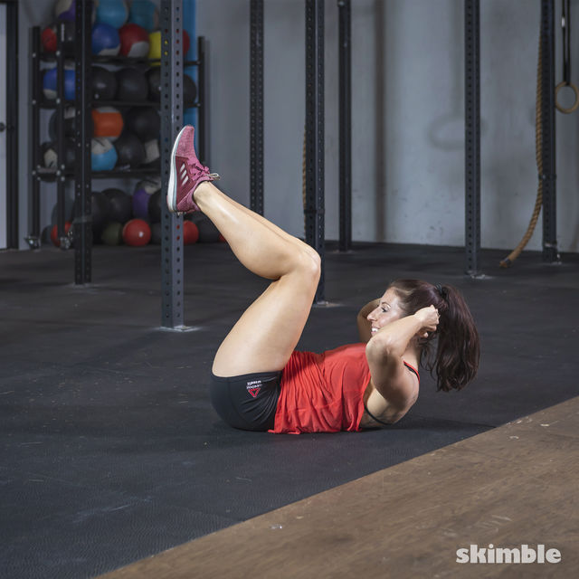
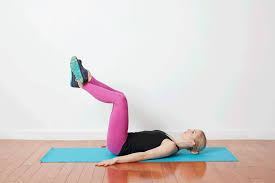
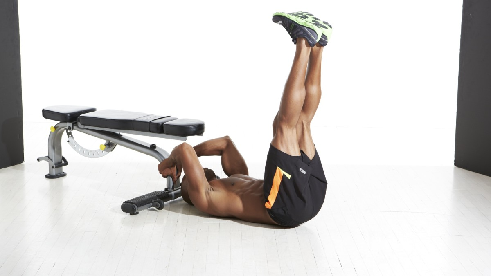
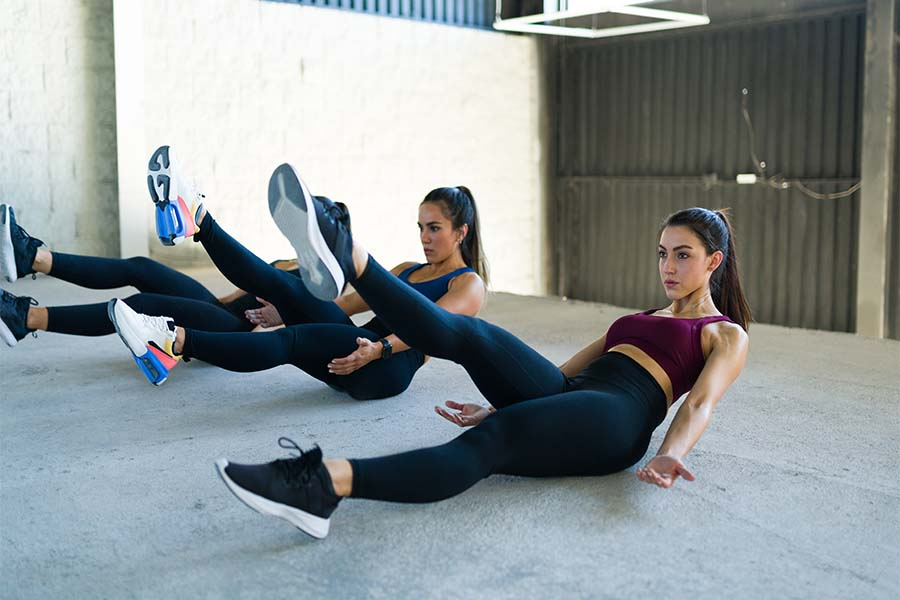
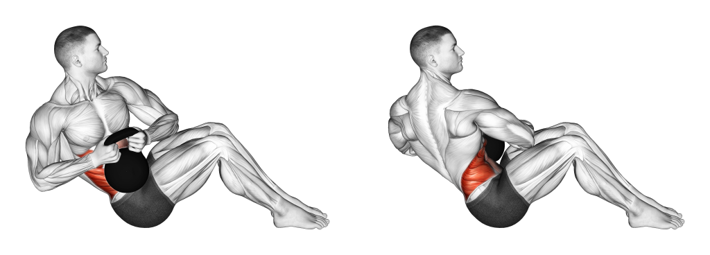
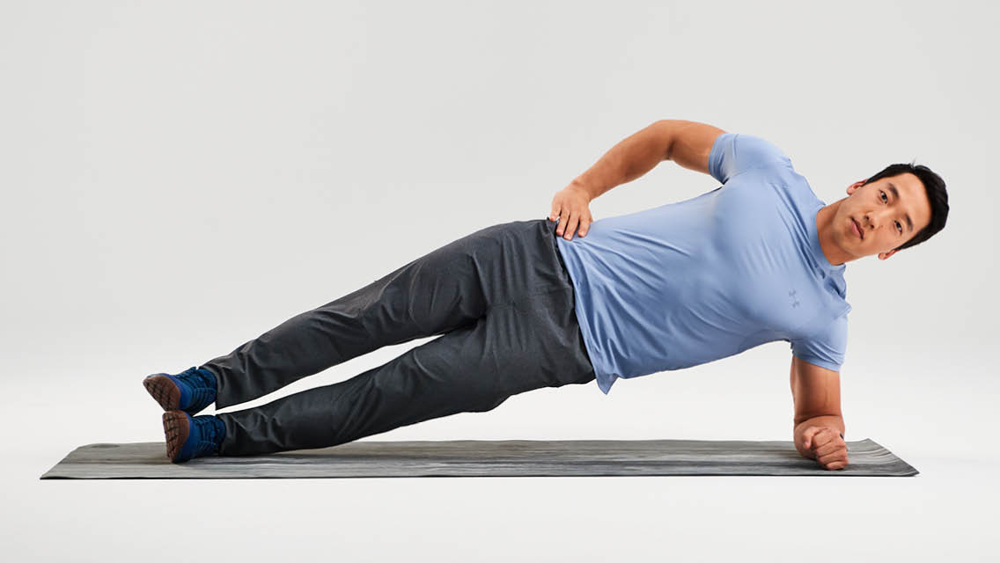

Abs Workouts
Upper Abs Workouts
Crisp Crunches
Crisp crunches focus on the upper abs and help build core strength.
Movement Category: Primary
Programming: 3-4 sets of 15-20 repetitions
Weight: Bodyweight; add resistance for extra challenge.
To do crisp crunches:
- Lie on your back with your knees bent and feet flat on the floor.
- Place your hands behind your head and lift your upper body towards your knees.
- Lower back to the starting position with control.
Reverse Crunches
Reverse crunches target the upper abs and are effective for core strengthening.
Movement Category: Primary
Programming: 3-4 sets of 12-15 repetitions
Weight: Bodyweight
To do reverse crunches:
- Lie on your back with your arms at your sides and legs raised towards the ceiling.
- Lift your hips off the ground and towards your chest.
- Slowly lower your hips back to the starting position.
Lower Abs Workouts
Leg Raises
Leg raises are effective for targeting the lower abs and improving core strength.
Movement Category: Primary
Programming: 3-4 sets of 15-20 repetitions
Weight: Bodyweight; add ankle weights for added resistance.
To do leg raises:
- Lie on your back with your legs extended and hands under your hips.
- Raise your legs towards the ceiling while keeping them straight.
- Lower your legs back to the starting position without touching the floor.
Flutter Kicks
Flutter kicks help target the lower abs and improve core endurance.
Movement Category: Primary
Programming: 3-4 sets of 30-60 seconds
Weight: Bodyweight
To do flutter kicks:
- Lie on your back with your legs extended and hands under your hips.
- Lift your legs slightly off the ground and alternate kicking them up and down.
- Maintain a steady, controlled pace throughout the exercise.
Obliques Workouts
Russian Twists
Russian twists target the oblique muscles and help improve core stability.
Movement Category: Primary
Programming: 3-4 sets of 20-30 repetitions
Weight: Use a medicine ball or dumbbell for added resistance.
To do Russian twists:
- Sit on the floor with your knees bent and feet flat.
- Lean back slightly and hold a weight with both hands.
- Twist your torso to the right, then to the left, while keeping your core engaged.
Side Planks
Side planks are effective for engaging the oblique muscles and improving core stability.
Movement Category: Primary
Programming: 3-4 sets of 20-40 seconds per side
Weight: Bodyweight; add a leg lift or weight for added challenge.
To do side planks:
- Lie on your side with your legs extended and feet stacked.
- Prop yourself up on your forearm and lift your hips off the ground.
- Hold this position while keeping your body in a straight line.
Core Workouts
Planks

Planks are a fundamental core exercise that engages multiple muscle groups.
Movement Category: Primary
Programming: 3-4 sets of 30-60 seconds
Weight: Bodyweight; add a weight plate for increased difficulty.
To do planks:
- Lie face down and prop yourself up on your forearms and toes.
- Keep your body in a straight line from head to heels.
- Hold this position for the prescribed time.
Mountain Climbers

Mountain climbers are a dynamic core exercise that also provides a cardiovascular workout.
Movement Category: Primary
Programming: 3-4 sets of 30-60 seconds
Weight: Bodyweight
To do mountain climbers:
- Start in a plank position with your hands under your shoulders.
- Drive one knee towards your chest, then switch legs rapidly.
- Continue alternating legs at a fast pace.